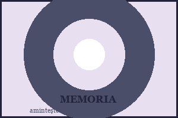
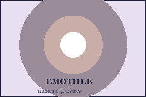

PSIHOLOGIA UMANĂ · MULTIMEDIA · PAGINA 3 DIN 4
Multimedia
Videoclip, sunete, resurse externe și galerie. Totul pentru o minte calmă și o memorie bună.

1. Videoclip: respirația 4-7-8
Un cerc se dilată în timpul inspirului (4 s) și se contractă în timpul expirului (4 s). Urmează-l cu privirea timp de 8 secunde și repetă de câte ori ai nevoie. Fiecare ciclu complet durează 8 secunde exact cât un ciclu de respirație liniștită.
controls
,
poster
,
width
,
height
,
loop
,
muted
.
Formatul nativ MP4 (H.264) funcționează în toate browserele moderne, fără plugin-uri.
2. Sunet de relaxare (acord A3+E4+A4)
16 secunde de ton pur cu val lent de intensitate potrivit pentru exercițiul de respirație.
Playerul folosește
<audio controls>
cu
<source type="audio/wav">
.

Pentru ritm în exercițiul de atenție, folosește metronomul de pe pagina Ghid (secțiunea Somnul) .
3. Resurse externe
Aici am inclus un mini-curs
<iframe>
de psihologie, integrat cu atributele
src
,
width
,
height
,
title
,
loading
.
Includ și legătura directă cu link-ul în caz că nu se încarcă
<iframe>
:
deschide articolul într-o fereastră nouă
.
4. Galerie — patru carduri
Patru miniaturi, fiecare în
<figure>
cu
<figcaption>
, cu
srcset
și
sizes
.




5. Resursele site-ului
Tot ce conține folderul site-ului, la un loc. Pentru a folosi corect resursele:
- deschide videoclipul și urmărește un ciclu complet de respirație;
- pornește sunetul de relaxare în fundal;
- notează în chestionar cum te simți după.
| Fișier | Tip | Descriere |
|---|---|---|
video/respiratie-478.mp4
|
video | Cerc care respiră, 8 s, 320×240, tăcut |
audio/sunet-relaxare.wav
|
audio | Acord A3+E4+A4, 16 s, anvelopă lentă |
audio/metronom.wav
|
audio | 120 bpm, 6 s, pentru exercițiul de atenție |
imagini/banner-minte.jpg
|
imagine | Rețea de noduri — mintea ca rețea |
imagini/harta-psihic.svg
|
SVG |
Harta psihicului, cu zone clicabile (
usemap
)
|
imagini/curba-uitarii.jpg
|
imagine | Curba uitării (Ebbinghaus), 640×360 |
imagini/curba-uitarii-mica.png
|
imagine |
Curba uitării, varianta mică pentru
<picture>
|
imagini/roata-emotiilor.jpg
|
imagine | Roata emoțiilor de bază |
imagini/hipnograma-somn.jpg
|
imagine | Hipnogramă: N1, N2, N3, REM |
imagini/creier-dezvoltare.svg
|
SVG | Prunarea sinaptică, trei vârste |
imagini/sigla.jpg
și
sigla.svg
|
imagine | Sigla site-ului, raster și vector |
imagini/coperta-video.png
|
poster | Posterul videoclipului (640×360) |
imagini/coperta-audio.png
|
imagine | Coperta piesei audio |
imagini/galerie-*.jpg
|
imagine | Patru carduri de galerie |
| Toate elementele multimedia utilizate. | ||